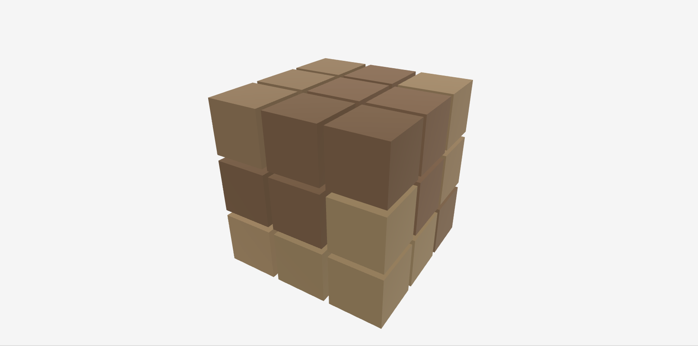

Solving Soma
Posted on February 1, 2026
Years ago in New York City’s Bryant park I came across a pop up store that sold puzzles, one of which was this wooden cube. I didn’t know what it was back then, but simplicity of the puzzle and the feel of the wooden blocks was attractive to me and so I bought it.
